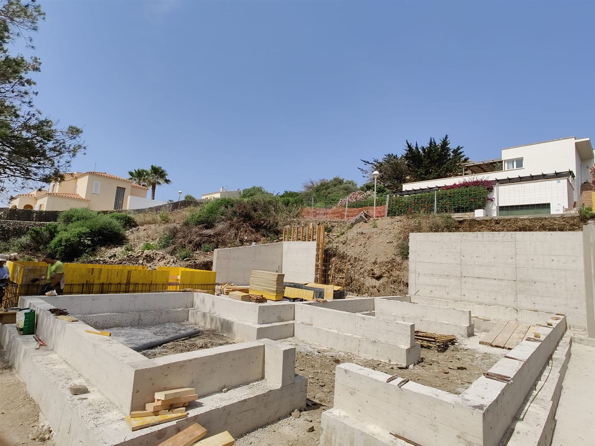
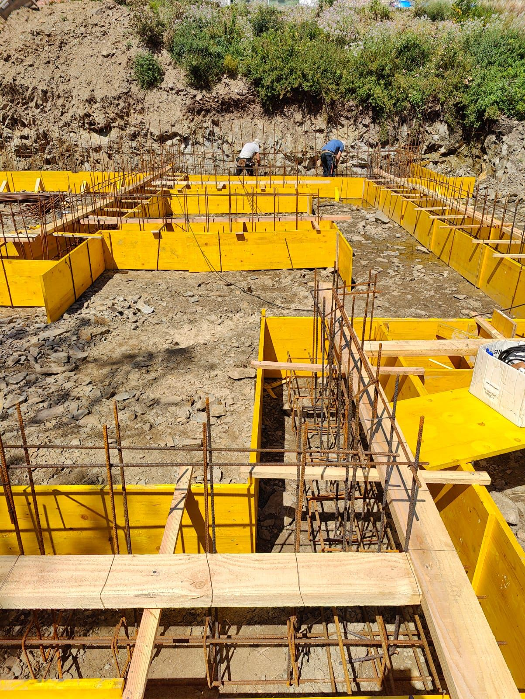
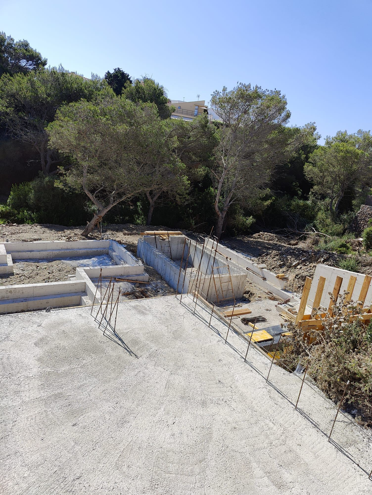

Névola · Vivienda piloto pareada · Estimación
Cuatro muros corridos bajo los lados largos de los módulos, como en Pino (Menorca, 2024), adaptados a la modulación de Névola (3,20 · 2,30 · 2,35 m × 9,50 m) y a dos plantas. Es una estimación para entender la solución y medirla: el dimensionado final lo fija el cálculo de estructura con el estudio geotécnico de la parcela.
Fotografías de una obra en Menorca con este mismo sistema: muros corridos de hormigón sobre zapata, sobre los que se colocan después los módulos.



| Hormigón HA-25 en zapatas | Volumen |
|---|---|
| ZC-1 (80 × 50) | 4,04 m³ |
| ZC-2 (100 × 50) × 2 | 10,10 m³ |
| ZC-3 común de medianera (120 × 50), media por vivienda | 3,03 m³ |
| ZC-4 (60 × 40) de muretes de cierre | 3,31 m³ |
| Zapatas | 20,48 m³ |
| Hormigón HA-25 en muros (0,65 m de alto) | Volumen |
|---|---|
| M-1 (25 cm) | 1,54 m³ |
| M-2 (30 cm) × 2 | 3,71 m³ |
| M-3 de medianera (25 cm) | 1,54 m³ |
| M-4 muretes de cierre (20 cm) | 1,79 m³ |
| Muros | 8,59 m³ |
| Partida | Cantidad |
|---|---|
| Excavación en zanja | ≈ 62 m³ |
| Hormigón de limpieza HL-150, 10 cm | ≈ 4,26 m³ |
| Hormigón HA-25/F/20/XC2, zapatas y muros | ≈ 29,07 m³ |
| Acero B 500 S (50 kg/m³ en zapatas, 75 en muros) | ≈ 1668 kg |
| Placas de anclaje 250 × 250 × 15 con 4 pernos | 18 ud |
| Cámara sanitaria: grava y lámina | ≈ 74,58 m² |
| Rejillas de ventilación | 6 ud |
Materiales como en Pino: HA-25/F/20/XC2, B 500 S, recubrimiento de 70 mm contra el terreno. La cimentación la ejecuta el promotor; RG21 entrega la posición de placas y pernos.
1. Estudio geotécnico de la parcela de Guadalix: tensión admisible y cota de apoyo (aquí se supone fondo a −1,20). 2. Cálculo de estructura: cargas de los pilares de planta primera sobre los muros y anchos definitivos de zapata. 3. Decisión sobre el nivel del terreno junto a fachada. 4. Replanteo de placas y pernos con el proyecto de fabricación de los módulos. El plano de Mahón (DWG de AutoCAD 2018) no se ha podido abrir; la referencia es Pino.